Available Horses
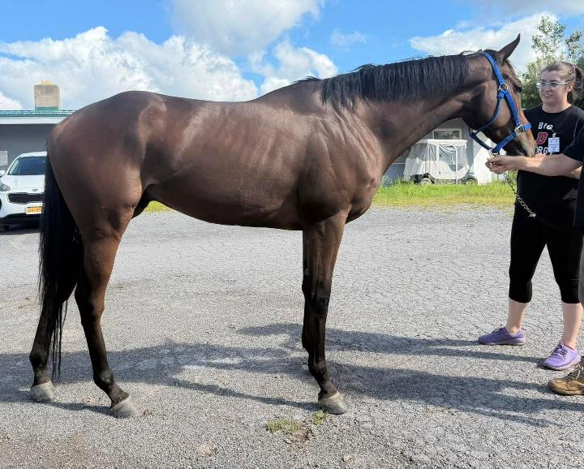
Located at Finger Lakes Racetrack in Farmington, NY (near Rochester) Take a look at this big, bay, beautiful gelding just asking to get off the track and do something more fun and interesting. The only issue the trainer has with this guy is that he doesn’t seem interested in finishing his races. Continue Reading...
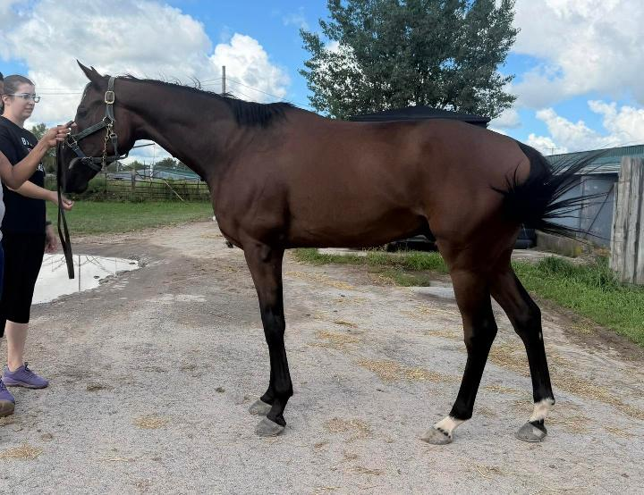
Located at Finger Lakes Racetrack in Farmington, NY (near Rochester) If easy, kind, and sweet is what you’re looking for, then look no farther than Doha Desert! This handsome boy is only three years old and has made it clear that racing is not his jam. He calmly walked out and visited with us, charming all of our volunteers, and even a shopper who deemed his personality as “sleepy”. Continue Reading...
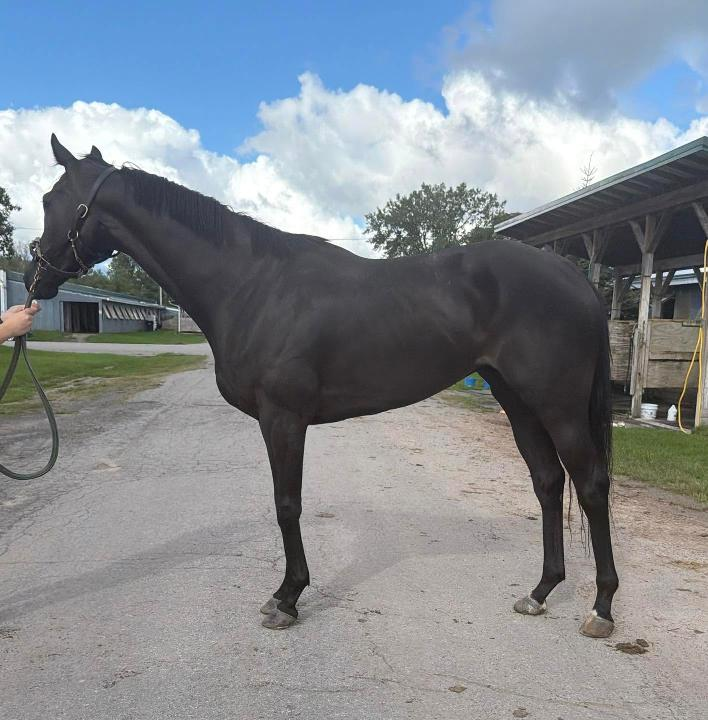
Located at Finger Lakes Racetrack in Farmington, NY (Near Rochester) Here we have a four-year old black beauty who has been with his trainer for almost his entire life. She is clearly in love with him and could not stop saying what a lover he is and how much she adores him. Over and over she emphasized “what you see is what you get,” he is “a lover,” ”a doll” and “a sweetheart. Continue Reading...
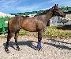
Located at the Finger Lakes Race Track in Farmington, NY (near Rochester, NY). If a sweet chestnut filly is your type, look no further. Capo Da Monte is lightly raced with only 3 starts. She reportedly came to her current trainer underweight but has since put on over 100lbs in the past 2 months. She is reported to have no vices and to be an absolute love in her stall. Capo is reported to simply not have the capacity for racing. Continue Reading...
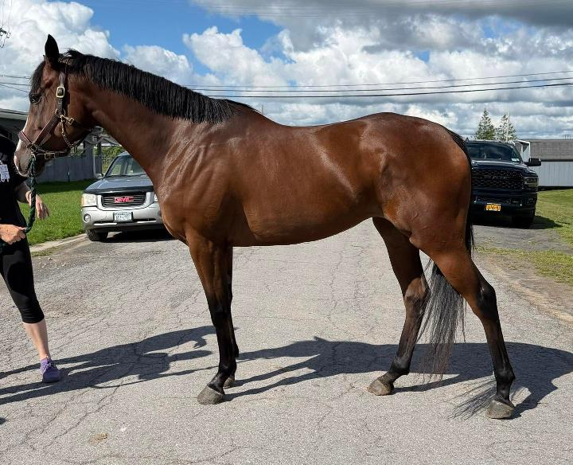
Located at the Finger Lakes Race Track in Farmington, NY (near Rochester, NY). This gorgeous girls photos speak for themselves! Tall, thick and stunning in just about every way. SJ's Faith is an unraced four year old who has been owned by the same person since she was a yearling. Continue Reading...

Located at Finger Lakes Race Track, Farmington, NY This cutie patootie stole our volunteer's heart with her adorable, sweet personality, her cute toe flicking movement, and her smarts. After enjoying a peppermint from her handler, she turned to our volunteer's open shoulder bag and started softly nuzzling through it in search of more mints. Continue Reading...
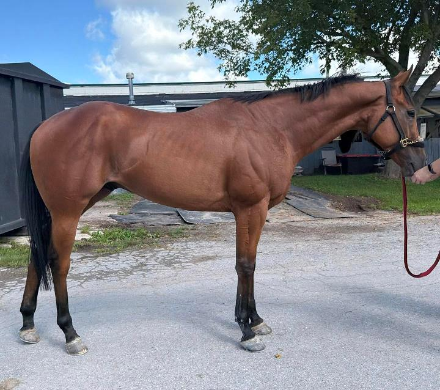
This was a great listing to kick off our day, setting the tone as we saw several really nice, young prospects! We loved this sweet, sleepy boy with the pretty forelock. We first caught him tucked up contentedly napping in his stall. Continue Reading...
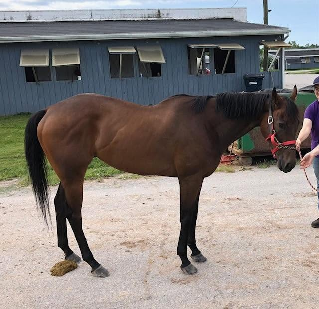
This sweet, kind boy is quiet enough that your granny could jog him. Literally. When we got to his barn, we couldn't find his trainer, so we placed a call. He'd had to leave for the day, but said, “take him out yourself for photos and video because he's super sweet and quiet”. Continue Reading...

This stunningly photogenic boy has the classic ‘Central Banker face’ and with his well-balanced proportions, you don’t realize how tall he actually is until you stand next to him. Continue Reading...
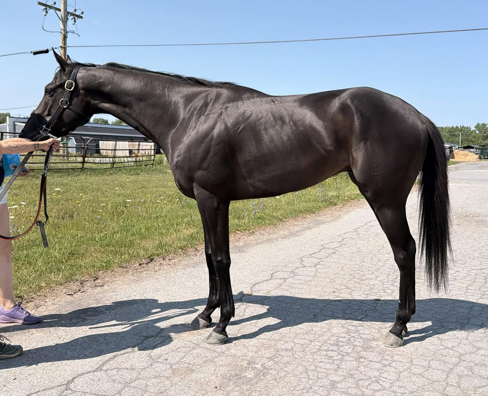
Located at the Finger Lakes Race Track in Farmington, NY (near Rochester, NY). Calling all ‘Swifties’! You’ll have a lot of fun coming up with a barn name for this refined, tall, dark, and very handsome boy. Continue Reading...
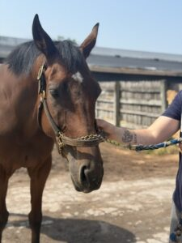
If you prefer your horses built like a “moose”, but far, far more attractive than one, Addyson's Dream is the horse for you! This large, thick guy is a trainer favorite that they just couldn't say enough good things about. Continue Reading...
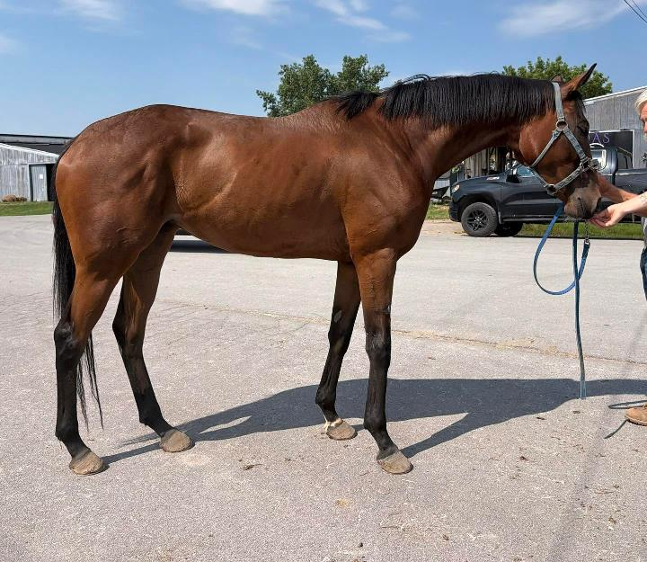
As you might guess by her name, this pretty and very leggy girl is a daughter of the popular Big Brown. We were told that this filly is friendly and affectionate with her handlers, well-behaved, and “doesn’t do a thing wrong” whether under tack or in her stall. And, during our session, we observed her to be very sweet, professional, and ladylike. Continue Reading...
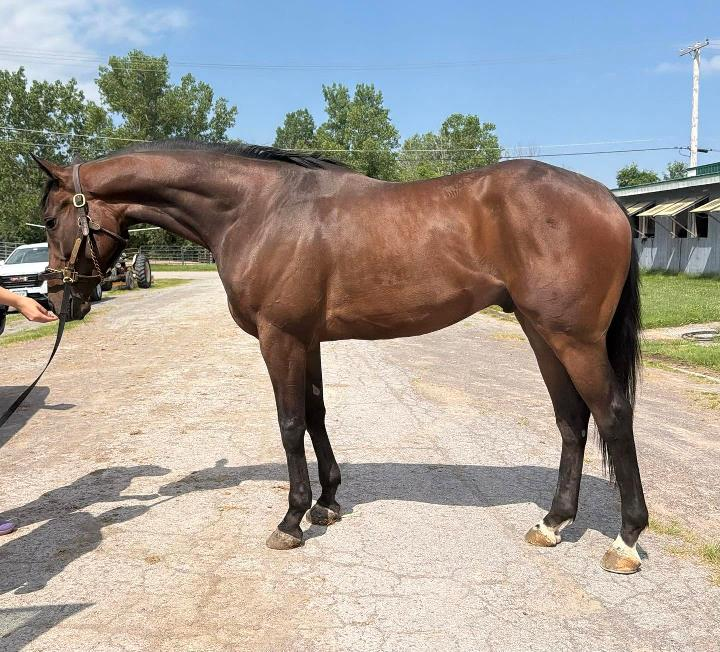
We were wowed by this handsome beefcake of a horse- one of our volunteers even described him as a “stupidly beautiful creature”. He’s gorgeous... and he knows it too. He is a solidly built, muscular horse, with depth through his heart girth, width through the chest, and with powerful hindquarters. He’s well balanced and appears to be a big, strong, and athletic. We were told that he is generally a good egg to work around and is “tremendous” to ride. Continue Reading...
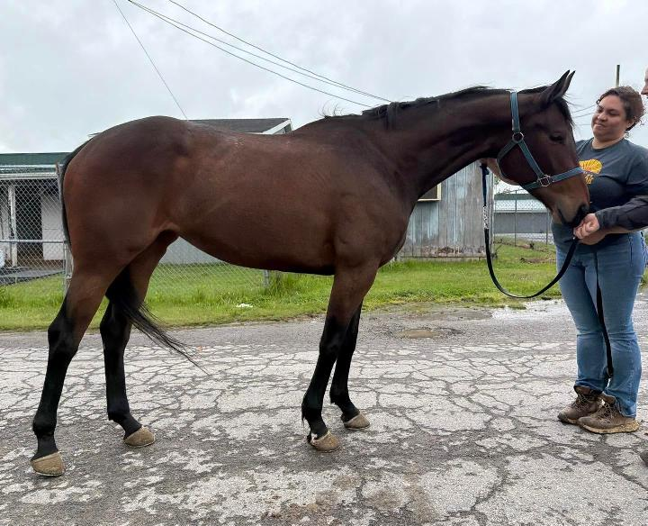
Located at Finger Lakes Racetrack, Farmington, NY (near Rochester) You know you’ve got a special horse when not only is she a trainer favorite, but she is a favorite of the trainer’s children, and Big City Dreamer is just that. Dreamer is so sweet and kind in her stall and at the farm that their son is frequently found with her. She is reported to have no vices, to be easy to have in the barn. Continue Reading...
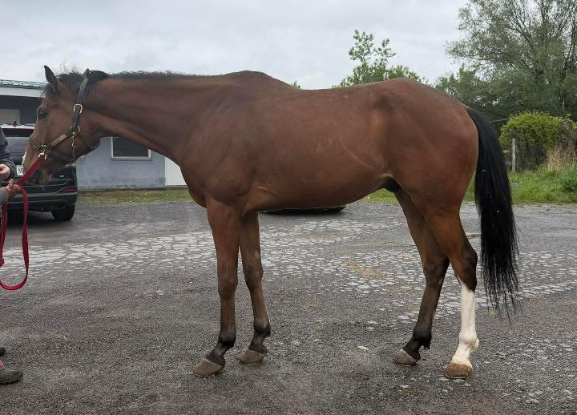
Located at Finger Lakes Racetrack, Farmington, NY (near Rochester) Sugarpapi is the horse everyone waits for- big, bay with chrome, in your pocket personality, and unraced! This big guy was part of a large starvation case. When his current connections took him on, he was given an entire year to put on weight, grow, and train. Continue Reading...